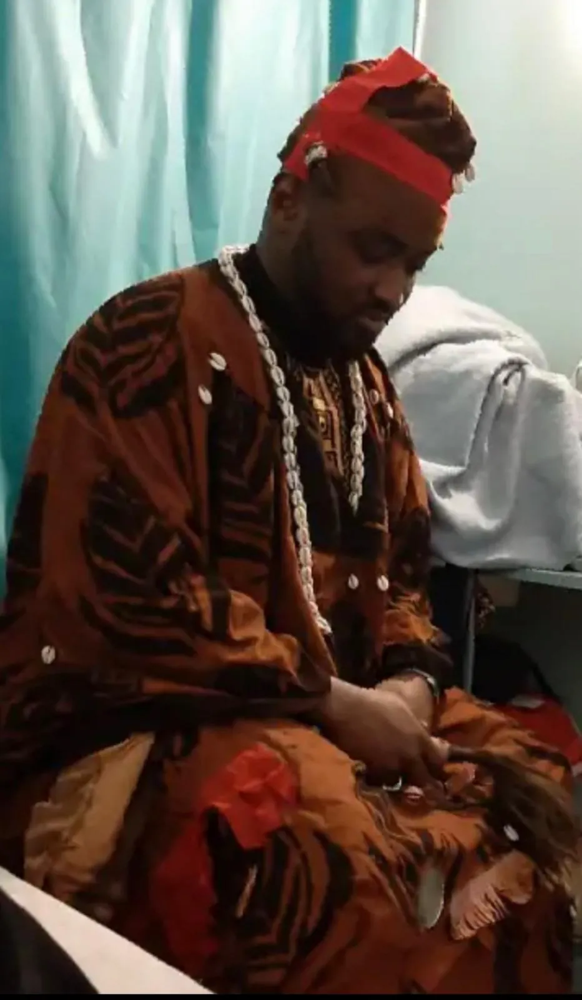

Maître Sékou · depuis plus de 25 ans
Grand MARABOUT voyant médium & guérisseur spirituel
Un savoir ancestral d'Afrique de l'Ouest au service de votre amour, de votre protection et de votre réussite — à Paris, en Île-de-France et partout en France.
Premier échange gratuit · confidentiel · sans engagement
Là où les chemins se ferment, le savoir des anciens ouvre une porte.
Maître Sékou est un grand marabout, voyant médium et guérisseur spirituel. Héritier d'un don transmis de génération en génération, il pratique les arts divinatoires d'Afrique de l'Ouest — au premier rang desquels la lecture des cauris, ces coquillages que l'on jette et que l'on interprète pour lire une situation et ce qui la noue.
Depuis de nombreuses années, il accompagne celles et ceux que la vie sentimentale, familiale ou professionnelle a mis à l'épreuve : une rupture qu'on n'accepte pas, un sentiment d'être suivi par la malchance, une décision impossible à trancher. Son travail n'a rien de spectaculaire — c'est une écoute, une lecture, un rituel adapté à votre cas, et une présence à chaque étape.
En présentiel à Rosny-sous-Bois, aux portes de Paris, ou à distance partout en France, dans la discrétion la plus totale.

Ce pour quoi l'on me consulte
Retour affectif
Faire revenir l'être aimé, sauver un couple au bord de la rupture, retrouver l'harmonie sentimentale. Renouer le fil quand le lien existe encore.
Désenvoûtement & protection
Lever les sorts et les blocages, défaire ce qui pèse, se protéger du mauvais œil, de la jalousie et des énergies négatives.
Voyance & guidance
Y voir clair sur le passé, le présent et ce qui vient. Un éclairage par les cauris pour poser une décision difficile et reprendre la main sur votre chemin.
Chance & réussite
Attirer la chance, ouvrir les chemins fermés, débloquer une situation professionnelle ou financière qui n'avance plus.
Un premier échange, gratuit, en quatre temps
Pas de mise en scène ni de discours tout fait. Vous appelez, on vous écoute, et vous repartez avec un éclairage honnête sur votre situation — que vous décidiez ou non de poursuivre.
Vous appelez
Par téléphone ou WhatsApp au 07 51 92 92 20. Vous dites, simplement, ce que vous traversez. Ce premier échange est gratuit et confidentiel.
Maître Sékou écoute
Il prend le temps de comprendre votre histoire et ce que vous espérez. Aucune question n'est jugée, aucun détail n'est de trop.
Il lit votre situation
Par les cauris et son expérience, il éclaire ce qui se joue, ce qui bloque, et ce qu'un accompagnement peut envisager dans votre cas.
Vous décidez librement
Si vous souhaitez aller plus loin, le suivi se fait à distance ou sur rendez-vous. Le déroulé et le coût éventuel sont dits clairement, avant toute décision.
Quand tout semble bloqué, rouvrir les chemins
Il y a des périodes où rien ne prend : les portes se ferment, les efforts ne paient pas, la malchance paraît coller à la peau. Maître Sékou agit sur ce qui entrave votre élan pour remettre la chance de votre côté.
- Débloquer une situation professionnelle ou financière qui stagne.
- Attirer la chance avant une décision, un entretien, un projet important.
- Lever la malchance qui semble vous suivre depuis trop longtemps.
- Retrouver confiance et reprendre l'initiative sur votre vie.
À Rosny-sous-Bois, à Paris & dans toute la France
Consultation en présentiel à Rosny-sous-Bois (93), aux portes de Paris, sur rendez-vous — et travail à distance par téléphone et WhatsApp partout en France, avec la même attention.
Des vies qui ont retrouvé leur équilibre
« Après plusieurs mois de séparation, je pensais que tout était fini. Grâce à l'accompagnement de Maître Sékou, le dialogue est revenu et nous nous sommes retrouvés. »
« Je traversais une longue période de blocages dans ma vie professionnelle. Après l'avoir consulté, j'ai senti un vrai changement et de nouvelles portes se sont ouvertes. »
« Ma relation était devenue très conflictuelle. Les conseils de Maître Sékou nous ont aidés à retrouver le dialogue et l'harmonie dans notre couple. »
« Je me sentais suivie par la malchance depuis des mois. Après l'accompagnement, j'ai retrouvé un calme que je n'avais plus. Merci pour l'écoute. »
« Je cherchais simplement à y voir clair avant une décision importante. La lecture de Maître Sékou m'a aidé à trancher sereinement. »
« Son écoute et son travail m'ont aidée à retrouver espoir et à rétablir le lien avec mon partenaire. Je recommande sincèrement. »
Témoignages de clients ; les ressentis sont personnels et ne préjugent pas des résultats d'un futur accompagnement.
Chercher du sens n'a rien de marginal
Consulter face à une épreuve du cœur ou à un coup du sort est une démarche partagée par des millions de personnes. Quelques repères sur sa place en France.
Sources : études de marché des arts divinatoires et de l'édition ésotérique en France.
Ce qu'on demande le plus souvent
Le premier échange est-il vraiment gratuit ?
Oui. Le premier échange est gratuit, confidentiel et sans engagement. Il sert à exposer votre situation, être écouté et savoir comment un accompagnement peut vous aider. Rien ne vous est demandé pour ce premier contact.
Peut-on faire revenir l'être aimé ?
C'est le domaine pour lequel on consulte Maître Sékou le plus souvent. Le travail vise à apaiser les tensions, lever ce qui bloque et rouvrir le dialogue lorsque le lien existe encore. Méfiez-vous de toute personne qui vous garantit un retour à date fixe : un accompagnement sérieux n'achète pas un résultat, il agit avec vous.
Les consultations se font-elles à distance, partout en France ?
Oui. La plupart des consultations se font par téléphone et WhatsApp, partout en France, avec la même attention qu'en présentiel. Un rendez-vous sur place reste possible à Rosny-sous-Bois (93), aux portes de Paris.
Comment se passe une première consultation ?
Vous appelez ou écrivez, vous exposez votre situation avec vos mots. Maître Sékou écoute, pose des questions, lit ce qui doit l'être par les cauris, puis vous explique clairement ce qu'un accompagnement peut envisager. Vous décidez ensuite librement de poursuivre.
Les échanges restent-ils confidentiels ?
Absolument. Ce que vous confiez à Maître Sékou reste strictement privé. Les échanges par téléphone et WhatsApp ne sont jamais partagés.
Comment reconnaître un marabout sérieux ?
Un praticien sérieux prend le temps de vous écouter, parle franchement de ce qui est possible et de ce qui ne l'est pas, respecte votre rythme et propose un premier échange sans engagement. Fuyez les promesses chiffrées, les délais garantis et la pression à payer dans l'urgence.
Faites le premier pas
Un simple appel suffit pour commencer à dénouer ce qui pèse. Écoute attentive, conseils sincères, discrétion garantie — tous les jours de 8h à 22h.
Premier échange gratuit · sans engagement